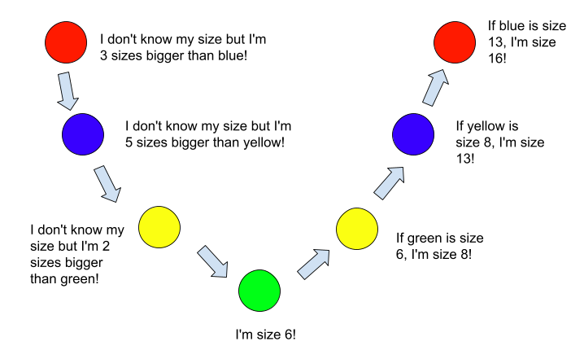

| RECURSION |
Recursion occurs when a method continuously calls itself. Let's take a closer look!
TECHNICAL DETAILS
Recursion was developed as a "divide and conquer" algorithm. Recursive methods solve a problem by breaking the problem down into smaller problems until it reaches a problem that it can definitively solve. For a problem to have a recursive solution, the following conditions must be met:
- The problem must have the ability to repetitively decompose
- This gives reason to use recursion, as it consistently calls itself and uses the same pattern over and over again to solve the problem
- There must be a way to identify the base of the solution (eg. the method stops calling itself and returns a non-recursive value after a certain value is reached)
- This is required to break out of the recursive method
- This is called the base case and will NOT call the method it resides in
- There must be a way of achieving a larger result based on what the recursive method returns
- The recursive method is going to be continuously calling itself and returning a value meaning that something needs to happen with those return values
TRACING RECURSIVE METHODS
To understand how to write a recursive method, we need to thoroughly understand its algorithm. Consider the diagram below:

The above diagram is essentially what happens when a recursive method is used. It looks almost like a V shape! Notice how we started off by not knowing any of our values, but after the base case (the green ball), we started figuring out the values of the rest of the shapes!
Take a look at this powers method I (Lily Phan) wrote which calculates the power of some number using recursion:
public static int powersR(int base, int exp){
if (exp <= 0){
return 1;
}
return powersR(base, exp - 1) * base;
}
Say we called the method using . Take a look at its output:
1728
So what's going on here? Let's backtrack the problem. We want to calculate the power (let's call this value b) of some base number (let's call this value n). To calculate this, the problem is usually written as nb. But this can also be written as n * n(b - 1). And n(b - 1) can also be written as n * n(b - 2). And this can keep repeating until the power is equal to 0, since when the power is equal to 0, the product is always 1.
Whoa, what's this? We have a repeating pattern that consistently decomposes, has a base case (if the power is equal to 0, the product will always be 1) and we have a way of achieving a greater result (finding out n(b - someValue) and multiplying it by the previous n value)! Looks like a good situation to use recursion.
The line is what calls the method in itself and causes the method to be recursive. Each time, it's passing the base value and a smaller exponent. The base value stays the same through each method call, but the exponential value consistently becomes smaller until since the value being passed in for the exponent is decremented by 1 each time. Refer to the image below which traces the variables in this power method and outputs them to console:
Remember! A common issue people make is to leave out the base case. If you don't have one, or if it is poorly written (eg. unreachable/can never be met), you will end up with an error as the method is infinitely calling itself. Also, when calling the method in itself, the value being passed in has to change in some way to get the problem to actually reduce to a smaller problem. If it doesn't, your base case will never be reached and it will run infinitely.
In some ways, recursion works like a loop. Most recursive methods can be written/replaced with iterative statements, but sometimes it's much faster and makes more sense to use a recursive method (eg. merge sort uses recursion instead of iteration to sort a set of data quickly).
BIBLIOGRAPHY
ICS4U0 Course Content, taught by Krasteva, V.
All code written by Lily Phan (2021).
All images made by Lily Phan (2021).